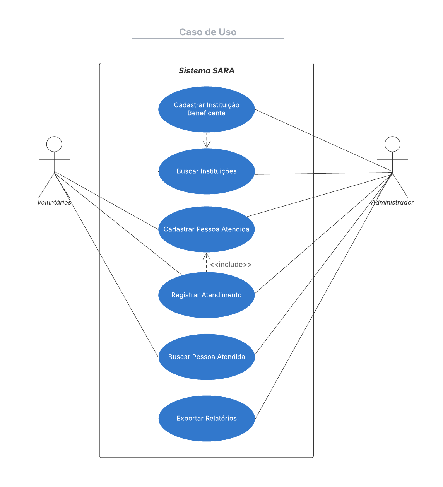
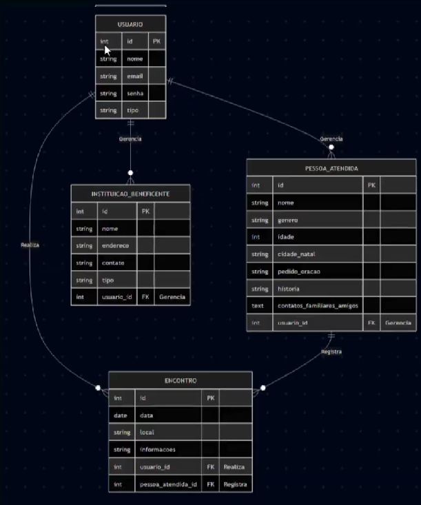
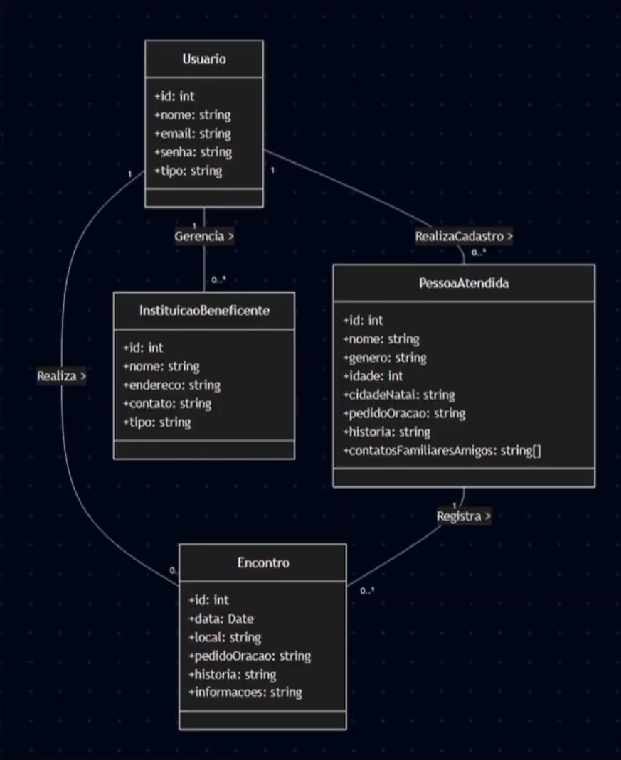

Diagramas
Modelagem do sistema. Clique numa imagem para abrir em tamanho real.
Diagrama de caso de uso
Dois atores usam o sistema: voluntários e administrador. Os dois buscam instituições, cadastram e buscam pessoas atendidas e registram atendimentos. Cadastrar instituições beneficentes e exportar relatórios fica só com o administrador. Registrar um atendimento inclui ter a pessoa atendida cadastrada.

Imagem ainda não adicionada: assets/img/diagramas/caso-de-uso.png'">DER
Quatro entidades: USUARIO, INSTITUICAO_BENEFICENTE,
PESSOA_ATENDIDA e ENCONTRO. O usuário gerencia
instituições e pessoas atendidas e realiza encontros. Cada encontro é
registrado para uma pessoa atendida, que pode ter vários encontros.

Imagem ainda não adicionada: assets/img/diagramas/der.png'">Diagrama de classes
As mesmas entidades vistas como classes (Usuario,
InstituicaoBeneficente, PessoaAtendida e
Encontro), com atributos e multiplicidades: um usuário cadastra
várias pessoas e realiza vários encontros, e uma pessoa atendida tem
vários encontros.

Imagem ainda não adicionada: assets/img/diagramas/classes.png'">